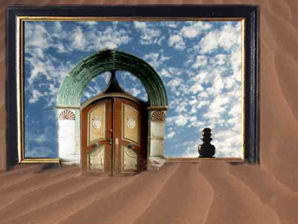

© copyright Alfred Ballabene, Vienna, 2000
"Border step change"
If you leave your body your outside area does not change continually but it
changes in steps. (This does not cout if you project or in the case of
spontaneous astral travels.) Every time you pass a border your surrounding
changes in the range of "only a bit" up to "dramatically". Let me just explain
what I understand by the term "border". A border is a location which prevents
you to have a sight of the coming, like a door, the hook of a wall or a
building, a street crossing etc. This changing by steps seems to be the result
of a psychic law. Using this law you even can realize a wish for arriving at a
special place by means of imaging this location after the border in front of
you. Thereby you have a chance to approach your desired location.
The rule behind these effects - it are effects of the subconscious. I will try to summarize those effects in a short article "Changes behind the border and the hidden" (but that needs some time).
If you want to materialize something you have a similar
effect:
If you say: "look at my empty hand, in the next moment I will hold a bunch of
flowers!" Nothing will occur.
But if you hide your hands behind your back and imagine to have flowers in your
hand and you then move your hands at the front - what a wonder, your hands are
holding a bunch of flowers!
That are the subconscious rules of your logic sight which prevent obvious wonders. The rules of physical live are deep engraved in your brain. Your brain responds automatically at these rules, so that in moments of danger you can react immediately without needing logic thinking. In real life it is logic that behind a corner everything may change, so that this effect is not forbidden! (Regard: your astral travels are directed by your physical body based Ego and not directly by your astral double existence. If it was not so, no impressions would be send to your brain and you would remember nothing.)
Border symbols

The Gate - Painting from Jacqueline Esen
Border symbols in the sense of encircles and gates
fence - wall - door - gate - window - river - curtain - tunnel
Border symbols in the sense of level differences
stairs - escalator - ladder - elevator - slope - mountain